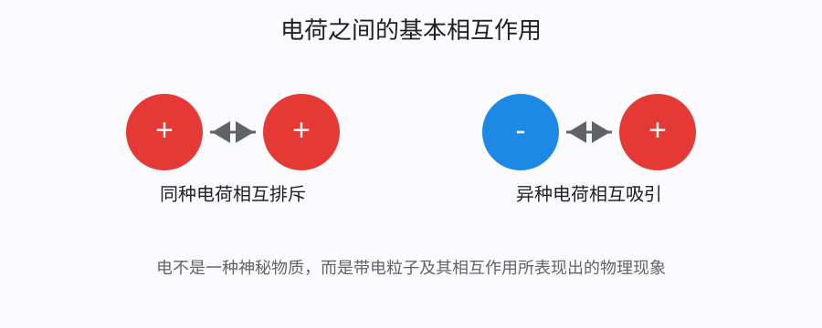
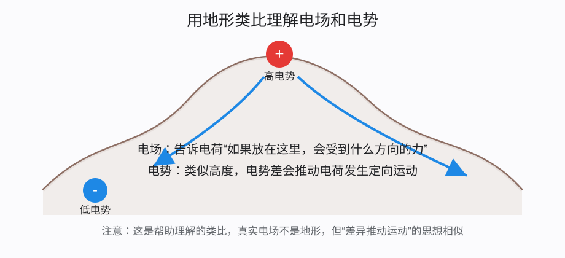

电是什么：从历史到本质
一、为什么“电”很难一句话讲清楚
日常生活中我们经常说“有电”“没电”“电流”“电压”“触电”“发电”“充电”。这些说法都和电有关，但它们指的不是同一个层面的东西。
例如：
- 手机电池里“有电”，说的是电池储存了可以转化为电能的化学能。
- 电线里“有电流”，说的是电荷正在发生定向运动。
- 插座“有电压”，说的是两个位置之间存在电势差。
- 闪电是“电”，说的是云层和地面之间发生了强烈放电。
- 电磁波也是“电磁现象”，但它不需要电线传播。
所以如果只问“电是什么”，很容易混淆。
更准确的说法是：
电不是一种单独的神秘物质，而是一类由电荷、电场、电势差、电流以及电磁相互作用共同表现出来的物理现象。
如果用最通俗的话讲：
电的根源是物质中带电粒子的存在和运动。当电荷分布不平衡，或者电荷发生定向运动时，我们就会看到各种电现象。

二、人类是如何一步一步认识电的
2.1 第一阶段：人们先看到“奇怪的吸引现象”
很早以前，人类就发现一些物体经过摩擦后，会吸引轻小物体。
古希腊人发现：
- 用毛皮摩擦琥珀后，琥珀会吸引羽毛、碎屑等轻小物体。
- 这种吸引不是普通的粘住，也不是磁铁吸铁那种现象。
英文中的 electricity 就来自希腊语中“琥珀”的词根。
这个阶段，人们还不知道电荷、电子、电场，只是观察到：
某些物体摩擦后，会出现一种看不见的吸引能力。
这就是静电现象的早期认识。
2.2 第二阶段：区分电现象和磁现象
古人也很早知道磁石可以吸引铁。
但后来人们逐渐发现：
- 琥珀摩擦后可以吸引轻小物体。
- 磁石主要吸引铁、镍等特定物质。
- 静电吸引可以发生在很多轻小物体上。
- 磁铁有南北极，而摩擦起电现象表现不同。
这说明“电”和“磁”不是完全相同的现象。
不过后来科学进一步发展又发现：电和磁虽然不是一回事，但它们有深层联系。这就是后来的电磁学。
2.3 第三阶段：人们发现电有两种“类型”
到近代，科学家发现不同物体摩擦后，有时互相吸引，有时互相排斥。
这说明电现象不是简单的“有吸引力”，而是存在两类性质。
后来人们把它们称为：
- 正电荷。
- 负电荷。
基本规律是：
同种电荷相互排斥
异种电荷相互吸引
这一步非常关键。它让电从“神秘吸引现象”变成了可以分类、可以比较、可以研究的物理对象。
2.4 第四阶段：富兰克林提出电荷守恒思想
本杰明·富兰克林通过大量实验提出了正电、负电的概念，并认为电不是凭空产生或消失，而是在物体之间转移。
今天我们知道，摩擦起电通常不是创造了电荷，而是电子从一个物体转移到另一个物体。
例如：
物体 A 失去一些电子 -> 带正电
物体 B 得到一些电子 -> 带负电
总电荷并没有凭空增加或减少，只是重新分布了。
这就是电荷守恒思想：
在一个孤立系统中，电荷总量保持不变。
2.5 第五阶段：库仑定量研究电荷之间的力
光知道“同种相斥、异种相吸”还不够。科学需要回答更精确的问题：
- 电荷之间的力有多大？
- 距离变远后力会怎么变化？
- 电荷越多，力会怎么变化？
库仑通过实验发现，两个点电荷之间的作用力满足库仑定律：
F = k · |q1 · q2| / r^2
含义是：
F：电荷之间的力。q1、q2：两个电荷的电荷量。r：两个电荷之间的距离。k：比例常数。
这个公式背后的直觉是：
- 电荷量越大，作用力越大。
- 距离越远，作用力越弱。
- 距离变成原来的 2 倍，力变成原来的 1/4。
这一步让电学从定性观察进入定量科学。
2.6 第六阶段：伏打发明电池，人类获得持续电流
静电虽然明显，但难以持续使用。闪电很强，但无法稳定控制。
真正改变历史的是电池。
伏打发明伏打电堆后，人类第一次拥有了相对稳定、可持续的电源。
有了电池，人们就可以持续研究：
- 电流。
- 电压。
- 电阻。
- 电解。
- 电磁效应。
这一步非常重要，因为科学研究不再只依赖瞬间放电，而是可以制造稳定电路。
2.7 第七阶段：奥斯特发现电流会产生磁效应
1820 年，奥斯特发现通电导线会让旁边的小磁针偏转。
这说明：
电流会产生磁场。
这是电学和磁学开始合流的关键时刻。
过去人们以为电和磁是两类现象，现在发现它们之间存在联系：
电荷运动形成电流
电流周围产生磁场
2.8 第八阶段：法拉第发现变化的磁场可以产生电
如果电流可以产生磁场，那么磁场能不能反过来产生电流？
法拉第通过实验发现：
变化的磁场可以在导体中产生电流。
这就是电磁感应。
发电机的基础原理就是它：
机械运动
↓
改变线圈中的磁通量
↓
产生感应电流
↓
输出电能
这一步直接奠定了现代电力工业基础。
2.9 第九阶段：麦克斯韦统一电和磁
麦克斯韦把前人的实验规律总结成统一的数学理论，建立了经典电磁学。
他的理论说明：
- 电场可以由电荷产生。
- 磁场可以由电流产生。
- 变化的电场可以产生磁场。
- 变化的磁场可以产生电场。
更重要的是，麦克斯韦预言电磁波存在，并指出光本身就是一种电磁波。
这意味着：
电、磁、光不是彼此孤立的现象，而是同一个电磁世界的不同表现。
2.10 第十阶段：电子被发现，电有了微观解释
后来，汤姆孙发现电子。
这让人类终于知道：
- 原子内部有带负电的电子。
- 原子核带正电。
- 金属导体中有大量可以移动的自由电子。
- 电流在金属中主要是自由电子的定向运动。
于是“电”不再只是宏观现象，而有了微观基础：
电现象来自带电粒子的存在、分布和运动。
三、到底什么是电
可以分三个层次理解。
3.1 第一层：电的根源是电荷
电荷是物质的一种基本属性。
就像物体有质量，会参与引力作用；粒子有电荷，会参与电磁相互作用。
电荷有两类：
- 正电荷。
- 负电荷。
同种排斥，异种吸引。
3.2 第二层：电荷会改变周围空间，形成电场
带电物体不是只有接触时才影响别的物体。它会在周围空间形成电场。
如果把另一个电荷放进这个区域，它就会受到力。
通俗理解：
电场像一种看不见的“影响范围”。它告诉电荷：如果你在这里，会被往哪个方向推或拉。

3.3 第三层：电荷定向运动形成电流
如果大量电荷朝某个方向整体移动，就形成电流。
金属导线中的电流，本质上主要是自由电子的定向移动。
但需要注意：
- 电子实际移动速度通常不快。
- 电信号传播速度很快，接近电磁波在介质中的传播速度。
- 就像水管里水分子移动不一定很快，但压力变化可以快速传递。
3.4 第四层：电能是电磁相互作用传递和转化的能量
电可以驱动灯泡发光、电机转动、电炉发热、芯片计算。
这些不是因为“电这种东西被吃掉了”，而是能量发生了转化：
电池：化学能 -> 电能
发电机：机械能 -> 电能
灯泡：电能 -> 光能 + 热能
电机：电能 -> 机械能
电炉：电能 -> 热能
芯片：电能 -> 计算过程中的信号变化和热
四、通俗总结：电到底是什么
可以用一个层层递进的说法总结：
物质由原子组成
↓
原子中有带正电的原子核和带负电的电子
↓
电荷之间会相互作用
↓
电荷会在周围形成电场
↓
电势差会推动电荷定向运动
↓
大量电荷定向运动形成电流
↓
电流和电场、磁场一起完成能量传递和转化
所以：
电不是单一物体，而是带电粒子、电场、电势差、电流和电磁相互作用共同构成的一类物理现象。
再用生活化语言说：
电就像自然界中一种由“带电粒子”引发的影响和流动。电荷不平衡时，会产生推动力量；有通路时，电荷会定向运动；运动过程中，能量可以被传递和转化，于是灯会亮、电机会转、手机会工作。
五、静电、电流和闪电是什么关系
5.1 静电
静电是电荷积累在物体表面或局部区域，没有形成持续流动。
例如：
- 冬天脱毛衣时出现噼啪声。
- 梳子摩擦头发后吸起小纸屑。
- 手碰金属门把手时被电一下。
这些都是电荷积累后突然重新分布造成的。
5.2 电流
电流是电荷的定向运动。
稳定电流需要：
- 可以移动的电荷。
- 推动电荷运动的电势差。
- 允许电荷运动的闭合路径。
例如电池、导线和灯泡组成闭合回路后，灯泡才会持续发光。
5.3 闪电
闪电可以理解为大规模静电放电。
云层内部、云层之间或云层与地面之间积累了巨大电荷差。当空气被强电场击穿后，原本不容易导电的空气突然形成放电通道，巨大的电流快速通过，于是产生强光和高温。
所以闪电不是“天上冒出一种特殊的电”，而是电荷差积累到极限后的剧烈释放。
六、电为什么这么重要
电重要，是因为它有几个极强的优势。
6.1 容易传输
电能可以通过导线远距离传输。虽然有损耗，但比直接搬运燃料或机械能方便得多。
6.2 容易转换
电能可以方便地转化成：
- 光。
- 热。
- 声。
- 机械运动。
- 化学能。
- 数字信号。
6.3 容易控制
通过开关、电阻、电容、电感、晶体管、芯片等器件，人类可以非常精确地控制电信号。
计算机的基础就是对电信号的控制：
高电平 / 低电平
↓
表示 1 / 0
↓
逻辑门
↓
电路
↓
CPU
↓
程序运行
6.4 可以承载信息
电话、广播、电视、Wi-Fi、光纤通信、芯片内部信号，本质上都离不开电磁现象。
现代信息社会建立在电和电磁波之上。
七、学习电学应该怎么继续
理解“电是什么”后，可以按这个顺序继续学习：
电荷
↓
电场
↓
电势和电压
↓
电流
↓
电阻和欧姆定律
↓
电功率和电能
↓
电容和电感
↓
磁场
↓
电磁感应
↓
交流电和直流电
↓
电路分析
↓
电子器件和现代应用
如果只记公式而不理解这条主线，电学会变得很碎。真正的核心是：
电荷产生电场，电势差推动电荷运动，电荷运动形成电流，电流和变化的电场、磁场共同构成电磁现象，最终完成能量和信息的传递。
八、核心术语速查表
| 中文术语 | 英文术语 | 通俗含义 |
|---|---|---|
| 电 | Electricity | 与电荷、电场、电流和电磁相互作用有关的一类现象 |
| 电荷 | Electric Charge | 粒子参与电磁相互作用的基本属性 |
| 正电荷 | Positive Charge | 与质子同类的电荷 |
| 负电荷 | Negative Charge | 与电子同类的电荷 |
| 静电 | Static Electricity | 电荷积累但没有持续流动的现象 |
| 电场 | Electric Field | 电荷在周围空间形成的影响，使其他电荷受力 |
| 电势 | Electric Potential | 描述单位电荷在某处具有多少电势能的量 |
| 电压 | Voltage | 两点之间的电势差 |
| 电流 | Electric Current | 电荷的定向运动 |
| 电阻 | Resistance | 阻碍电流通过的性质 |
| 电能 | Electrical Energy | 通过电磁相互作用传递和转化的能量 |
| 放电 | Discharge | 积累电荷快速重新分布的过程 |
| 电磁感应 | Electromagnetic Induction | 变化磁场产生电动势或电流的现象 |
九、总结
人类认识电的过程，大致经历了：
摩擦琥珀吸引轻物
↓
区分电和磁
↓
发现正负电荷
↓
建立电荷守恒
↓
用库仑定律定量描述电力
↓
用电池制造持续电流
↓
发现电流产生磁场
↓
发现变化磁场产生电流
↓
用麦克斯韦方程统一电磁现象
↓
发现电子，建立微观解释
从今天的角度看，电的本质可以这样理解：
电是由带电粒子的存在、分布、运动及其产生的电场和磁场共同表现出来的物理现象。电荷是根源，电场是影响空间的方式，电势差是推动电荷运动的原因，电流是电荷定向运动的表现，电能则是这些电磁相互作用在系统中传递和转化的能量。